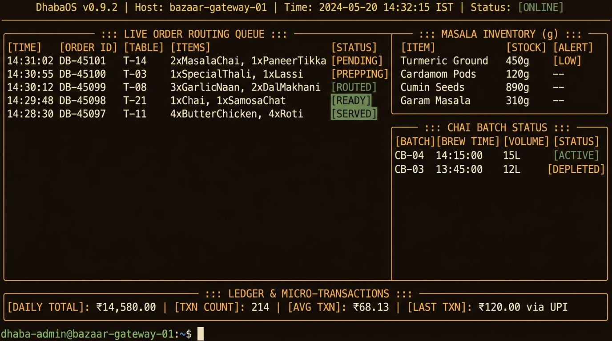

RECIPE #01 // DISTRIBUTED ORDER FABRIC
● PRODUCTION DEPLOYED

STATION: 40+ POS MESH
DhabaOS: Real-Time Kitchen Sync Engine
"Sub-5ms order synchronization fabric with decentralized peer failover for high-volume dining networks."
Go 1.22
gRPC / HTTP2
Redis Streams
WebSockets
SQLite WAL
React Canvas
CRITICAL CHALLENGE: DUAL-WRITE PHANTOM SURGES
During dinner peak loads with 40+ concurrent POS terminals losing internet connectivity, conflicting split-brain orders occurred. Engineered an idempotent distributed state machine with Raft-inspired vector clocks and local SQLite WAL journals that reconcile deterministically within 120ms of reconnection.